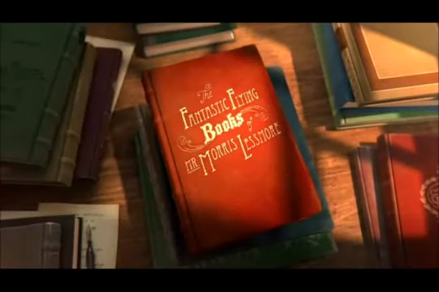

15:07 · 1 OPERA
Il fantastico mondo dei libri.
Il contenuto del filmato
Il cortometraggio è raccontato qui attraverso 117 fotogrammi distribuiti lungo circa quindici minuti. All’inizio un uomo con cappello scrive su un libro; seguono immagini di una tempesta fantastica, edifici inclinati e un paesaggio quasi monocromo di detriti. Una donna sospesa a fili collegati a libri colorati e un volume con gambe accompagnano il passaggio verso una sala piena di scaffali, dove il personaggio viene rappresentato nuovamente a colori. I campioni mostrano libri aperti in aria, un pianoforte, pagine enormi, un tavolo con utensili e il protagonista impegnato con i volumi e con la scrittura. Altri personaggi, inizialmente grigi, compaiono davanti allo sportello con libri colorati. Più avanti l’uomo ha capelli grigi e scrive nella poltrona verde; negli ultimi campioni è raffigurato dall’aspetto giovane, sospeso sotto un fascio di libri. Un volume rosso torna fra gli scaffali e compare una bambina all’ingresso. La chiusa mostra un ritratto del protagonista accanto a quelli già presenti nella sala. La successione delle immagini suggerisce una lettura sul rapporto fra libri, memoria e trasmissione. È però un campionamento visivo: la descrizione non completa gli intervalli mancanti con una trama ricordata, non ricostruisce il sonoro e non assume significati come morte, aldilà o guarigione come fatti pronunciati nel film.
Opere e riferimenti

The Fantastic Flying Books of Mr. Morris Lessmore
Fotogramma del corto al secondo 30, non copertina del libro: Immagine con il titolo del cortometraggio, dal passaggio a 0:30. Non è una locandina o copertina del libro.
L’immagine è parte del video qui descritto e mostra il titolo su un volume disegnato. Non viene certificata l’identità di montaggio con un master ufficiale o la data di questa copia.
Titolo leggibile sul cartello a 30/35 secondi e crediti di regia a 845 secondi; corrispondenza con i dati primari Academy del cortometraggio, distinto dal libro illustrato.
Passaggio 0:30 ↗ · Fonti e libro ↗La descrizione riguarda alcune immagini del filmato. Il sonoro non è verificato; le didascalie visibili non attestano le parole pronunciate.